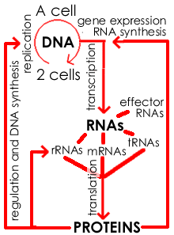
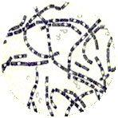
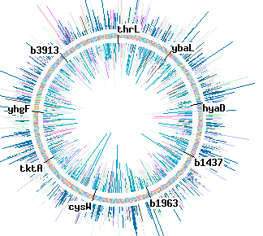

|
First visualized in 1676 by Anton van Leeuwenhoek, bacteria have been a favorite model organism for biologists ever since. |
Bacteria as a model systems |
In any biological study, the choice of organism is critical – which organism we study will be determined primarily by the questions we want to answer. If we are interested simply in population dynamics, it is impractical to study an organism that take twenty to thirty years to reach reproductive age and require expensive facilities to maintain. At the same time, we would prefer that the lessons we learn from our studies be as widely applicable as possible. It is for this reason that many key studies on molecular mechanisms, cell growth, and evolutionary dynamics have been carried out using bacteria. |
|
In the current scientific view, all living organisms can be grouped into one of three kingdoms, the Bacteria, the Archea and the Eukarya. Although bacteria, Methanococcos jannaschii (an archaea), ferns and whales (both eukarya) are dramatically different, the great surprise to emerge over the last 50 years is that at the cellular and molecular levels, they are all remarkably similar. In particular, organisms share a common core machinery that stores and uses information to build and maintain their structure and produce their behaviors - all living organisms appear to be descended from a common ancestor that lived billions of years ago. This has been one of the great vindications of the theory of evolution – in fact, one could make a strong argument that systems that display the traits of living organisms, genetic variation and differential reproductive success, must evolve and diversify. |
The Machinery of Life:  |
All extant organisms are store their genetic information in double-stranded DNA. Information is stored in in the sequence of nucleotides along the length of a DNA molecule. All organisms use essentially the same scheme to encode this information; it is known as the genetic code. The replication of the DNA forms the basis of cellular and organismic reproduction. To use the information stored in DNA, it is first transcribed into RNA. Many kinds of RNA are made; one type, known as messenger or mRNA, is used to make proteins, through the process of translation. |
Proteins have many functions. They regulate the replication of DNA, its transcription into RNA, catalyze most of enzymatic reactions that occur within the cell, and are responsible for cell shape and movement. This common core molecular machinery, DNA → RNA → Protein, is present with minor modifications in all known organisms. It
is, in itself, a strong indicator that all organisms share a common
ancestor, which appeared to live approximately 3,000,000,000
years ago. |
 |
| Why study bacteria? There are many compelling practical and technical reasons to study bacteria for their own sake. First, and perhaps most importantly, many human, animal and plant diseases are caused by bacteria. By learning about them, we hope to be able to control them. |
anthrax |
Advances in hygienic practices, and the discovery and development of antibiotics, drugs that kill or suppress bacterial growth, have been based on studies of pathogenic bacteria and their interactions with their hosts and ecological neighbors. These antibiotics hey play an important part of the ecological and evolutionary interplay between species. |
| Antibiotics have transformed the world. They are a major reason why infant mortality rates have fallen from ~300 per 1000 births at the beginning of the century to less that 7 per 1000 today (in the industrialized world). Yet the future offers challenges. The widespread use of antibiotics has produced a new evolutionary selection pressure. In response, antibiotic resistance has become more prevalent among microbes, driving the search for new types of antibiotics. |
 |
In addition to their
medical importance, bacteria are used in many industrial processes,
for example in the production of yogurt, cheese, sour
cream, sauerkraut,
pickles, enzymes and vitamins. |
|
Under the right conditions, some bacteria can divide once every 20 minutes. If there were no other factors involved, a single bacterium could divide 80 times in a day. This would lead to 280 bacterial cells, that is 1,208,925,819,614,629,200,000,000 cells (~1.2 x 1024 cells). The mass of a single, typical bacterial cell has been estimated at 10-12 grams (10-15 kilograms). |
How much is that? 1.2
x 1024 bacteria
x 10-15 kg/bacteria=
1.2 x 109 kgs of bacteria |
| The
foundations of molecular biology were
based on studies of bacteria and their viruses, the bacteriophage or
bacteria eaters.
The bacteria used in these studies were chosen in large part because they were easy to grow. Among the most widely used was, and continues to be, Escherichia coli, referred to as E. coli. E. coli inhabits our digestive system. When growing in your gut, E. coli is a facultative anaerobe, that means it can grow in the presence or the absence of molecular oxygen or O2. In the lab E. coli is generally grown aerobically, that is, in the presence of oxygen. |
|
|  | There are many strains of E. coli Most are benign, but some, like O157:H7, are pathogenic and can cause severe illness and death. We will be using the benign strain K-12. Even though we are virtual, it is a good idea to wash your hands with soap and water before you leave the lab (keyboards can be dirty!) The E. coli genome is a circular double-stranded molecule of DNA; this DNA molecule is 4,639,675 base pairs in length and encodes 4267 genes. |
Use Wikipedia |
revised
14-Dec-2023
|